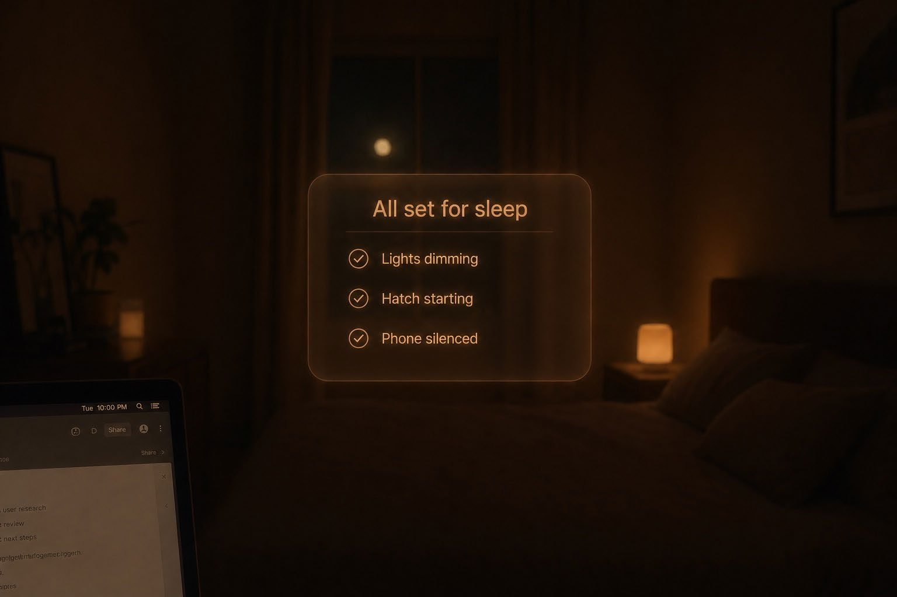
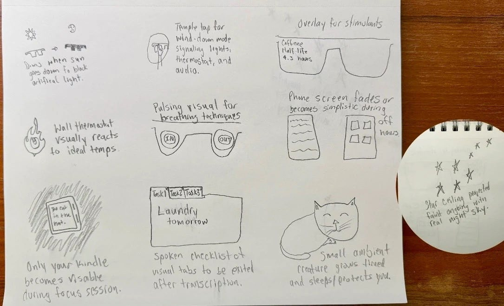
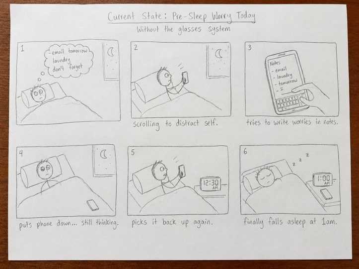
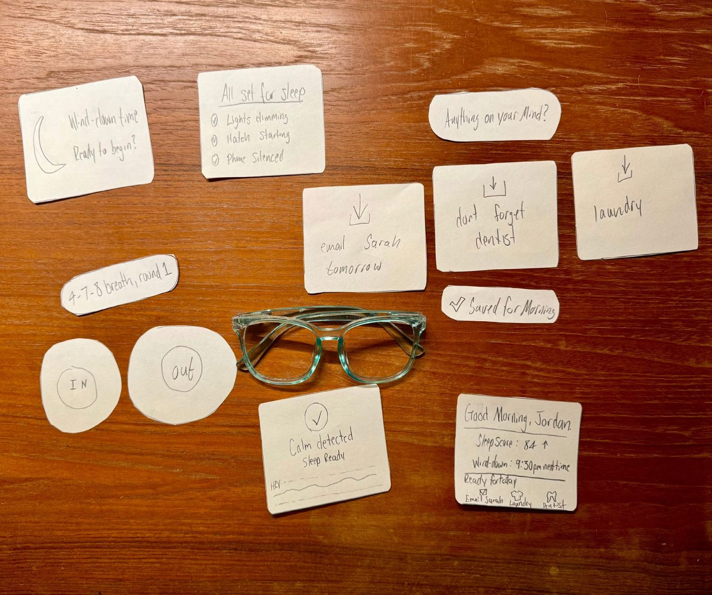
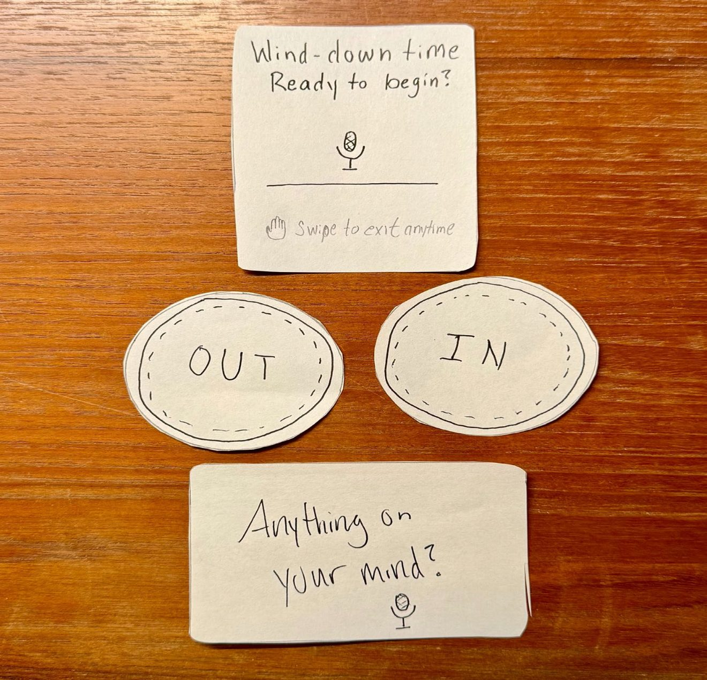
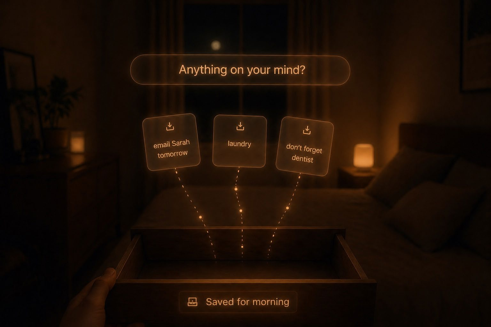
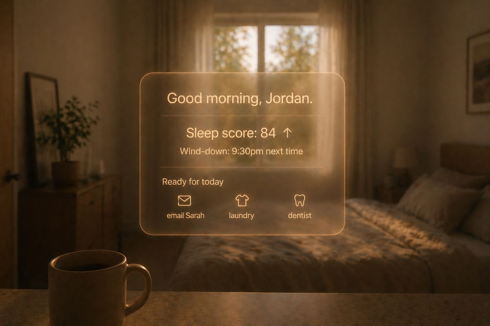
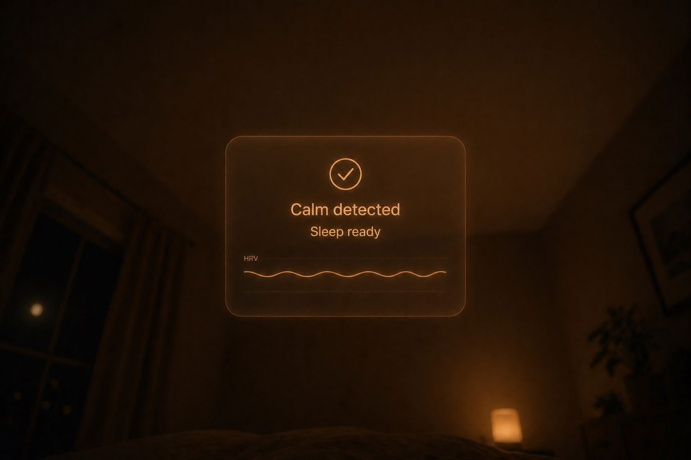

Wind-Down Smart Glasses
AR glasses that orchestrate the room around you, prototyped from paper sketches to a tested interaction flow.

Most people know the rules of sleep hygiene and break them anyway. Nothing in the room tells them the day is over.
Wind-Down detects an elevated heart rate past bedtime and runs a gentle ritual: lights dim, the Hatch starts, worries get captured by voice and filed for morning, pulsing rings pace a 4-7-8 breath, and a morning recap closes the loop.
I led the cognitive offloading half of the concept, the voice capture, the drawer metaphor, and the morning return, which became the spine of the final flow. We built it across three fidelity stages, testing hand-drawn cards held through empty sunglass frames, and used AI deliberately at each stage.
Problem
Meet Jordan: a working professional whose nervous system is still in work mode at 10pm. They scroll in bed, fall asleep with the TV on, and wake up groggy. Their sleep tracker reports a poor score and offers no path forward. Jordan knows the principles of sleep hygiene. Most evenings unfold the same way regardless.
The framing that unlocked the project: this is a behavioral execution problem. Telling Jordan to wind down is useless. Changing the environment around Jordan, dimming the lights, starting the sound, taking the worries out of their head and putting them somewhere safe, is the actual intervention. AR glasses can deliver ambient prompts without demanding attention, and IoT puts the burden of responding on the room.
Sleep hygiene is a behavioral execution problem. The environment has to carry the ritual.
Project problem statement

Process
We started deliberately divergent. Each of us produced 10+10 ideation sheets alone, ten broad concepts then ten pushing depth on a single direction, before comparing anything. My partner explored breathwork and nervous-system regulation. I took pre-sleep cognitive offloading: how you get tomorrow's worries out of someone's head at the moment they're keeping them awake. Then we each storyboarded three vantages, the current state, the future state, and what happens when something breaks.
We fed photographs of all of it to an AI with one instruction: read these as a design critic. It surfaced the gap neither sheet had bridged. No handoff existed between offloading your worries and starting to breathe. That critique produced the six-beat scenario the rest of the project was built on: detection, IoT handoff, cognitive offload, breathwork, calm detected, morning recap.



Three Wizard-of-Oz sessions produced four prioritized findings: no action cue on the first card, unclear IN/OUT breathing labels, no way to exit mid-session, and ambiguous offload prompting. Each mapped to a specific change: a mic icon with “Swipe to exit anytime,” large single-word breath cards, and an empty state that prompts speech.
We then redrew the problem cards independently, without coordinating, and arrived at the same three solutions. That convergence was the signal the moves were intuitive.

Findings
The second round validated the core interaction. Voice-first capture removed the friction of typing in bed. One tester's summary was “very seamless, I didn't have to click any buttons.” The drawer metaphor for offloaded worries read instantly: the worries land somewhere, out of your head and into a container. And testers immediately connected the morning recap's task list to the worries they'd spoken the night before. The loop closed visibly, which was the whole point.


A structured cognitive walkthrough, asking the four standard questions at every step, passed five of six steps and failed one honestly. Breathwork had no timing signal between the IN, HOLD, and OUT phases, so a user couldn't tell whether they were keeping pace. That failure confirmed what user testing had already suggested: the Wizard simply couldn't replicate breath timing, and a production version needs a paced audio or visual count.
The project doubled as an experiment in AI-assisted prototyping, and the lessons were specific. AI worked best as a second pass. Hand-sketching produced our most original ideas, and AI earned its place at critique and gap-finding. AI image generation needed tight direction: the amber-on-dim aesthetic only emerged once we specified it explicitly in every prompt, and consistency took several attempts per overlay.
Hand-drawn cards held through empty sunglass frames produced honest feedback, because users were responding to the system logic itself.
Lessons learned · Stage 4
Reflection

If we redid this tomorrow we'd converge earlier. Working in parallel for as long as we did cost us roughly a week, and the AI critique that merged our directions could have happened at the halfway point. We'd also pilot with a single tester before scaling to three. Two of our four first-round findings came down to problems in the script itself, and one pilot would have caught them.
The next iteration has a clear backlog from testing: a “+” affordance during offload so users know they can keep going, “Saved for Morning” as its own confirmation beat, replacing HRV jargon with plain “resting heart rate,” a personalized baseline captured during onboarding, and real Hatch and smart-bulb APIs in place of the Wizard.
What I carry forward is a conviction about fidelity: test the logic before the polish, and let the cheap prototype earn the expensive one. Every finding that mattered here came from paper.